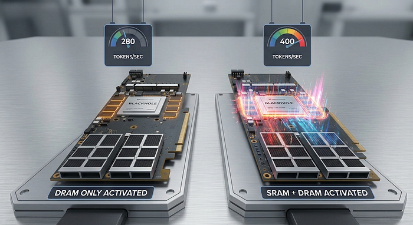
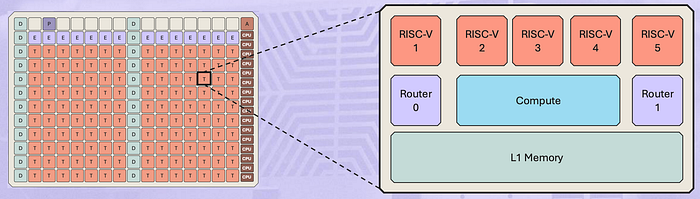
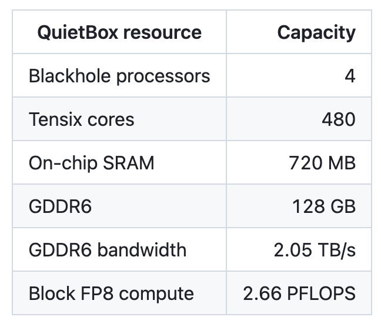
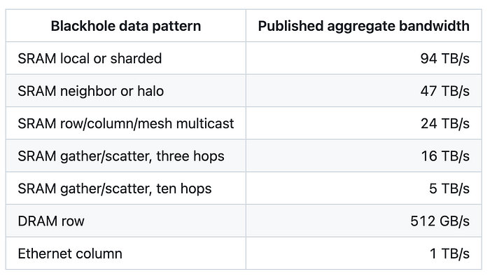
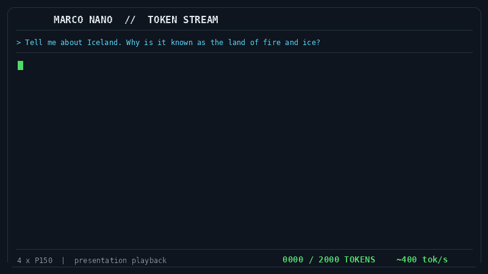
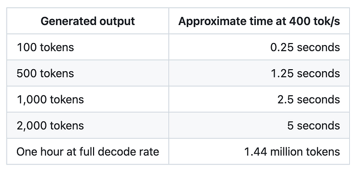
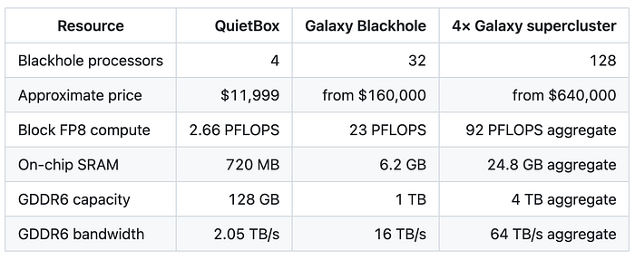

我们拿Marco-Nano-Instruct（80亿参数混合专家模型，每token激活约6亿参数），把它的完整自回归解码流水线，在一台1.2万美元的Tenstorrent QuietBox（Blackhole） 上推到了397.7 token/s。
这个数字的意义不止于贵不贵：它不是投机解码、没有草稿模型、不跳层，token完整穿过全部28层。SRAM是额外的杠杆：把每个token都要取的关键数据留在芯片旁边。
实验主角是Marco-Nano-Instruct，一个8B MoE（混合专家）模型，每token激活约6亿参数。优化后自回归解码流水线在桌边QuietBox上跑到397.7 token/s。

trace本身已越过400：不交付最终token日志重放时到402.6 token/s；项目记录中最强的全DRAM端到端约260 token/s。
「这是batch one」：无投机解码、无草稿模型、无跳层、每用户数字里没有隐藏第二流：token穿过全部28层、最终归一化，端到端一气呵成。
用的优化族与高性能NVIDIA代码相同：kernel融合、异步预取与双缓冲、精细分片的数据流、设备端状态、trace图。SRAM是额外杠杆：与其每个token都去拉关键数据，不如把它摆在消费它的Tensix核心旁。
大多数做AI的人都认识NVIDIA，但很少有人知道Tenstorrent处理器内部构造，值得从硬件说起。

Blackhole是Tensix核心网格，由两套片上网络连接。每个Tensix核心组合了：基于tile的矩阵引擎、向量引擎、可编程RISC-V核心（负责计算与数据搬运）、本地SRAM、硬件管理的环形缓冲流控。
两个用户可编程的数据搬运内核可发起异步读写、寻址SRAM/DRAM存储体、通过信号量协调，并在计算内核工作的同时搬运数据。
Hot Chips 2024的Blackhole和TT-Metalium演示把芯片描述为「独立AI计算机」。这是个有用的说法：Blackhole不只是等待主机供料的矩阵引擎：计算、数据移动、本地存储、DRAM控制、网络都是机器中可编程的部分。

当前的Blackhole p150产品暴露120个Tensix核心、180MB SRAM、32GB GDDR6（512 GB/s）、Block FP8下664 TFLOPS，还有4个800G以太网口支持Blackhole直连。
所有这些均为本地拥有，并可通过Tenstorrent的开源软件栈完全编程。
运行LLM有两个不同阶段。预填充处理输入提示，许多token一起评估；解码逐一生成答案token，每个新token依赖之前所有token（自回归）：解码步是高度内存受限的。
现代AI处理器大部分时间在搬运张量而非做乘法。算术单元速度提升快于外部内存供给速度。NVIDIA通过HBM解决：先进封装 + 庞大规模支撑的供应链；Tenstorrent则押注SRAM驻留。

这些是完整Blackhole设计的架构级汇总数据，不是承诺每个内核都能看到94 TB/s。SRAM带宽随参与核心数与数据移动模式扩展。
Marco Nano提供了合适的实验形态：真实28层MoE、每层232个专家、每token选八个，涉及注意力、增长的KV缓存、路由、专家执行、张量并行集合通信与自回归反馈：与更大规模MoE必须做的工作类别相同。
总参数量80亿，但每token仅激活约6亿参数。这让在四颗芯片上复现内存策略成为可能：把关键循环注意力与解码状态保留在SRAM，同时从GDDR6流式加载选定专家权重。
确实使用了Blackhole原生低精度格式：对选定注意力与语言（token embedding/logit）部分用低精度。
记录中最强的全DRAM端到端路径约260 token/s；在围绕持久SRAM数据优化流水线后，实际路径到397.7 token/s，吞吐提升约53%。原始trace重放（不含最终token日志交付）到402.6。

以约400 token/s进行的演示回放。Iceland副本经过精心挑选以让流可见：这是速度可视化，而非模型质量样本。

这改变了模型的使用感受：长答案几乎即时返回。编程Agent（智能体）可以检查、提议、测试、修订，而无需在循环里花大部分时间等推理；评估可即时、交互式进行。
区别在暂存（staging）与驻留（residency）。每个加速器都会暂存数据：NVIDIA开发者用异步拷贝、TMA、双缓冲、kernel重叠把数据搬上搬下；Tenstorrent的这个实验把关键数据驻留在SRAM里，让重复出现的循环数据不再每token往返外部内存。
QuietBox是这套架构的桌面级版本；Galaxy是扩展性论证变得有趣的地方：Galaxy Blackhole在6U系统中连接多块处理单元。

从QuietBox到Galaxy，价格约涨9.2倍：处理器数8倍、SRAM约8.6倍、DRAM容量7.5倍以上。
NVIDIA和Tenstorrent下的是不同的赌注。NVIDIA围绕HBM、NVLink与深度成熟的专有软件生态构建了异常强大但以HBM为中心的系统；Tenstorrent反向扩展：加芯片、加SRAM、加内存，直至关键路径塞进分布式SRAM。
AI基础设施讨论常把经济性简化为每百万token成本：这对服务业务有用，但对用模型构建的人来说不完整。快速自有推理同时带来几方面的自由：全栈可观察、数据不出门、迭代闭环更快。
QuietBox实验回答了小版本问题：循环工作集可驻留Blackhole SRAM，选定冷权重从GDDR6流式加载，全token流水线在小型MoE上接近每秒400 token。Galaxy让我们探讨大规模版本。
基础模型共享工作集中多少能驻留32芯片？上下文增长时KV如何分布？专家预取在哪与注意力重叠？不牺牲每用户延迟下多少批处理提升tile利用率？多Galaxy互联时哪些张量该移动？
参考：https://medium.com/@arnis.us/400-tokens-per-second-on-a-12-000-tenstorrent-quietbox-425aaf55bbeb